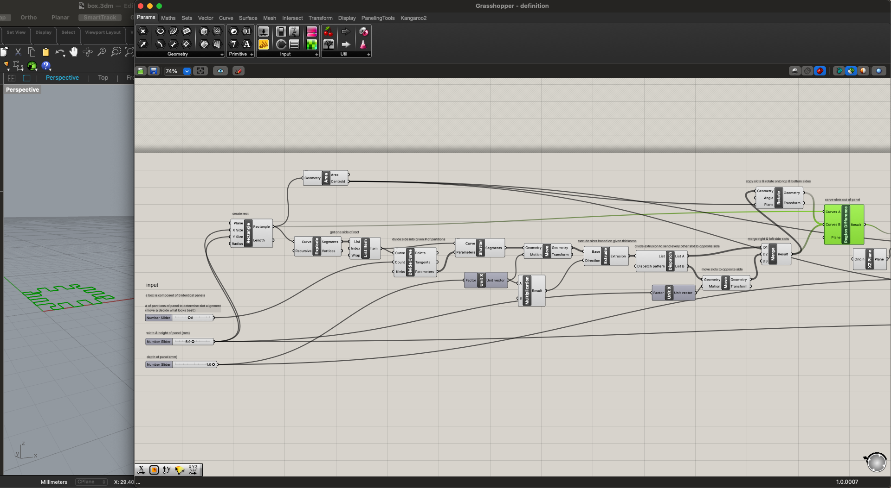
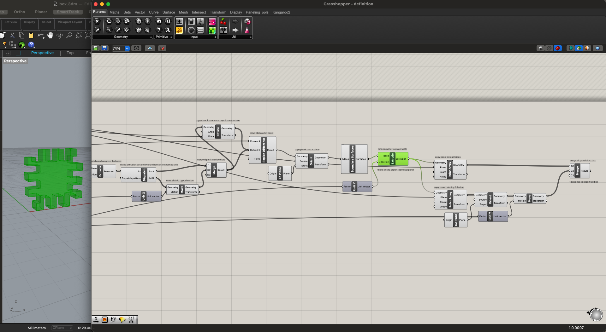
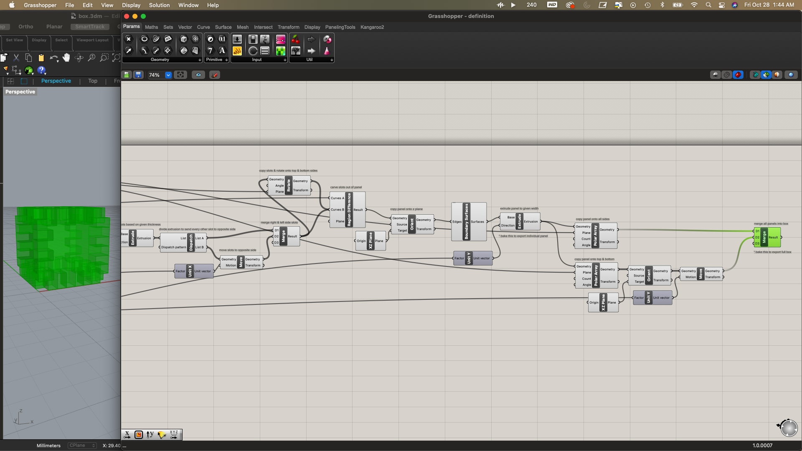

For this assignment, we needed to design a box made up of flat panels with fingerjoints/boxjoints, tabs, or another joining method design for sheet material, then 3D print it in separate pieces.
I started by finding a Grasshopper tutorial for a creating a box with fingerjoints. I was still feeling a little iffy on my Grasshopper skills and wanted to invest more time in getting a handle on parametric modeling. The video walked through how to create the sides, but not the top or bottom, so I followed along, writing my own definition loosely based on theirs with edits and expansions. My final definition creates a full six sided box with fingerjoints so that it can be pressed together and fit tightly with no additional adhesion needed. In the definition, one can input the height/width of each side panel (each is a square), depth of each side panel (also the width/depth of each slot), and the number of partitions that the slot alignment is based on (each side will have half that number of slots). I've commented what's happening in each stage in the .gh file, but will include screenshots of a few key moments.   
What I like the most about parametric modeling is that you can make dumb decisions that only set you back for the time it takes to print and test them. Then you just adjust a few sliders and keep rockin and rolllin. For instance, I started by test printing squares that were 2.5 cm x 2.5 cm x 0.1 cm panels divided into 10 partitions. When they started printing I realized they were essentially scalloped squares and the depth was way too thin for the slots to function as joints, and I canceled the print job after the first couple layers.
I then landed on 5 cm x 5 cm x 1 cm panels divided into 8 partitions (aka 4 alternating slots on each side). I began by printing a half-sized model (2.5 cm x 2.5 cm x 0.5 cm panels) from a .stl exported with a tolerance of 0.1 mm, but the fit was a little too snug. I next printed it at full-size from a .stl exported with a tolerance of 0.001 mm, and the measurements were more accurate and pieces fit together better, but you still needed to force them a bit. The prints also took an hour per panel and the fourth one became a spaghetti monster halfway through, so I decided to try for something a little smaller and thinner and cut my losses.
I remembered a conversation with Jess Hord about how changing the infill type could make the prints more flexible, so I looked into that a bit, and decided to try concentric infill with 25% density based on this article. I created 3 cm x 3 cm x 0.5 cm panels divided into 4 partitions (aka 2 alternating slots on each side) and exported them with 0.001 tolerance. This was the golden ticket! I printed them in groups of 2, which took 32 min each, so in total printing took 16 min per panel and 96 min for the full box. Most importantly, in the end they all clicked together sooooO satisfyingly.